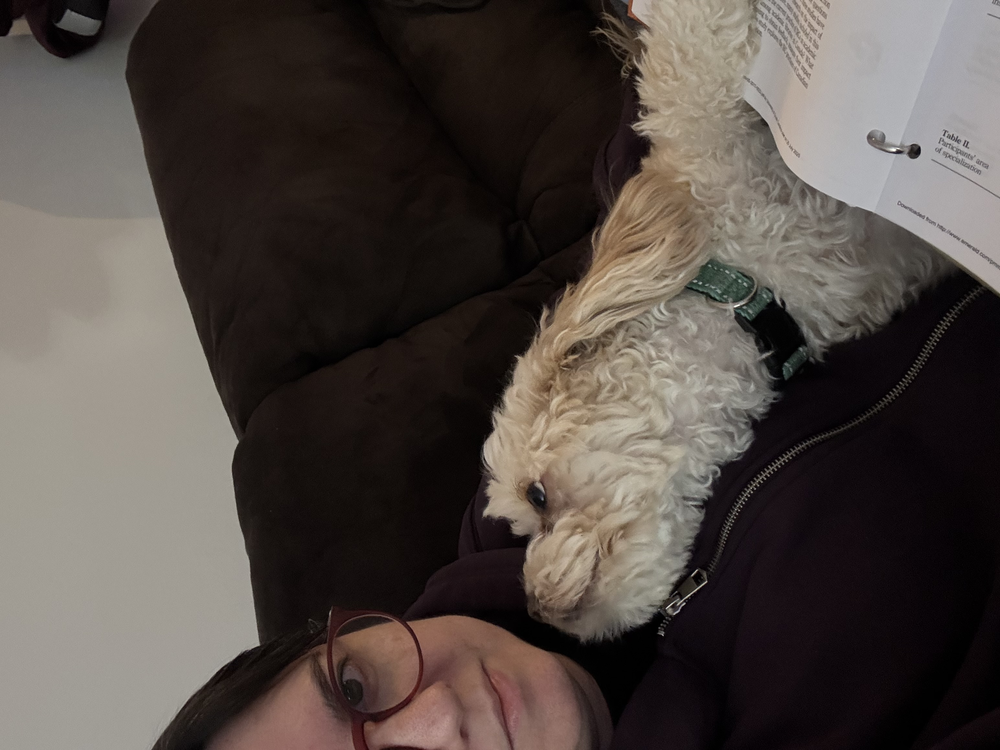

My favorite hobby has always been reading, and for over a decade Science Fiction & Fantasy has been my preferred genre, with occasional dips into Horror. I think SFF appeals to me so much because within the genre there are so many different subgenres, from space opera to speculative, and I love getting immersed into a completely different world/universe.
In 2014 I started commuting over an hour each way on the subway, and would always read on my commute. I was quickly tearing through books and got in a rut of just reading whatever I spotted on kindle unlimited. This resulted in reading a lot of books that weren't doing it for me and I was not enjoying reading at all. I don't remember where I saw it recommended, but at some point I came across N.K. Jemisin's book, The Fifth Season, and was blown away. It was the best book I had read in a very long time, and set me on a path of more intentional choices in what I read.
After reading all of N.K. Jemisin's books, I checked out her Twitter account and started reading books and authors she recommended and quickly found a number of new (to me) authors who I love. I also started reading (and eventually voting for) the annual Hugo nominated works, which has helped me discover so many books and authors that I can't imagine not having read.
I started a reading tracker in 2015 in a Google Sheet, originally just noting the title, author, and number of pages. Eventually I added the date I finished each book, and in 2024 in an attempt to better remember everything I read, I also began a written journal where each book gets an entry that includes a brief synopsis, what I did or didn't like about it, and a rating out of 5. So now that I've got a spreadsheet and a written journal, why not a website as well?
I normally read e-books, but I like to get physical copies of my favorite books so I can flip through them easily to look for things. I'm also working through a backlog of books people have gifted me!

My dog Noodles is always happy to snuggle on the couch with me when I'm reading, but I do need to keep a hand free to pet him at all times.
